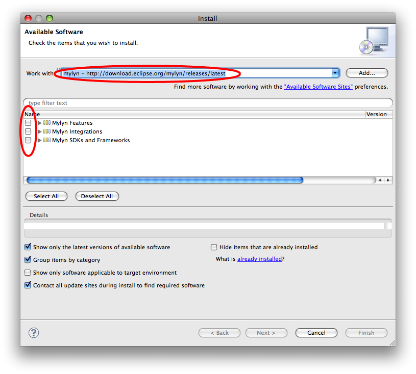

What does the ASTC Plug-in do?
The ASTC Plug-in will gather data about what code you edit or look at, when you did this action, the work item that is set as your current work item, and the user id that was used to log into the Jazz repository. The gathered data is then transmitted through a SSH2 tunnel to a server at the SEGaL lab located at the University of Victoria and stored in a data base.
(Figure 1) How to get to the installation menue.
|
(Figure 2) Where to put the repository url and what to select.
|  |
Installing Mylyn
If you know how to install an Eclipse Plug-in just get the URL below and go ahead.
- To install Mylyn go to "Help"->"Install Software" (Figure 1)
- add http://download.eclipse.org/mylyn/releases/latest (Figure 2) to your list of online repositories
- install everything offered on that site (Figure 2)
- restart Eclipse
(Figure 3) How to get to the preferences.
|
(Figure 4) How to get to the Mylyn configuration and what to change.
|
(Figure 5) How to get to the Mylyn decorator and how to disable it.
|
Configuring Mylyn
If you are not a Mylyn user, you need to make some changes to the standard configuration such that Mylyn does not interfere with your work flow.
- Go to "Eclipse"->"Preferneces" (Figure 3)
- Expand the "Mylyn" node, select "Context", and uncheck all boxes (Figure 4)
- Expand the "General" and "Appearance" node, select "Label Decorations", and uncheck the "Task Context Decorator" (Figure 5)
You can also close all Mylyn related views, such as the Task view.
(Figure 6) How to get to the installation menue.
|
(Figure 7) Where to put the repository url and what to select.
|
Installing the ASTC Plug-in
Installing the ASTC Plug-in is similar to installing the Mylyn plug-in without the issue of configuration.
- Go to "Help"->"Install Software" (Figure 6)
- add http://home.segal.uvic.ca/~schadr/astc/agilefant-astc/site.xml (Figure 7) to your list of online repositoris
- install everything offered on that site (Figure 7)
- restart Eclipse
Wish you happy coding.
Any bugs please either email adrian.schroeter@googlemail.com or file a bug at directly against our project.
{kind=link}
{kind=link}
{kind=link}
{kind=link}
{kind=link}
{kind=link}